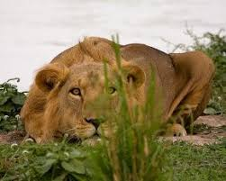
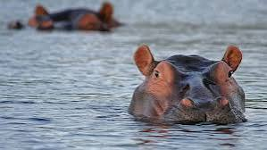
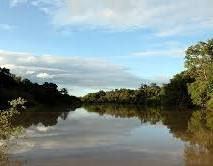
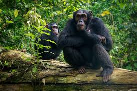
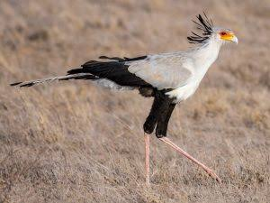

About Kainji Lake National Park
Kainji Lake National Park is one of Nigeria’s most prominent protected areas, established in 1979.
It covers over 5,000 square kilometers and is located in the north-central region of Nigeria,
spanning Niger and Kwara States.
The park is named after Kainji Lake, a large man-made lake formed by the Kainji Dam on the River Niger.
It combines rich biodiversity with scenic beauty, making it a key destination for nature lovers,
researchers and tourists seeking wildlife and adventure experience.
Wildlife And Nature
Kainji Lake National Park supports a rich mix of wildlife and natural scenery, making it one of Nigeria’s top biodiversity zones. With its savannah grasslands, rivers, and forested areas, the park offers a safe haven for animals and a refreshing experience for nature lovers, tourists, and researchers alike.
Common Animals
- African lion
- Hippopotamus
- Antelope
- Baboon
- Hyena


Notable Features
- The Kainji Lake shoreline
- The flowing OLI River
- Sheabutter trees and Baobabs
- Dense woodland trails
- Scenic savannah landscapes

Visitor Experience
Many visitors describe Kainji Lake National Park as a peaceful retreat filled with natural charm. The calm atmosphere, close-up wildlife moments, and scenic views make the visit memorable. Whether it’s watching hippos in the water or spotting rare birds in the trees, the park offers a refreshing break from busy city life.

